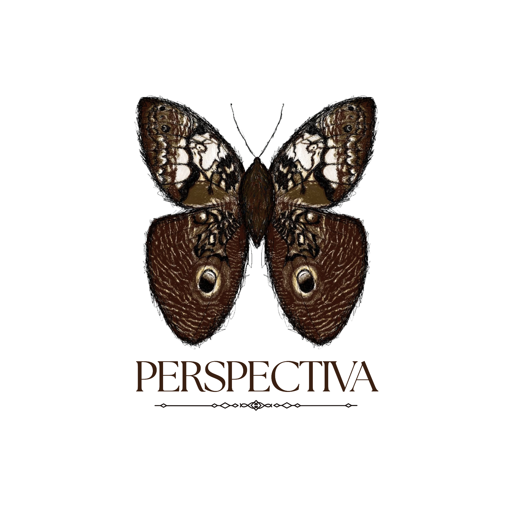

MEUS TRABALHOS.

MEU PROJETO PRINCIPAL, INDARA.
Indara é o meu principal projeto como desenvolvedor de jogos e um projeto que venho construindo com bastante dedicação. A ideia nasceu da vontade de criar algo que não fosse apenas um jogo, mas que também tivesse uma identidade própria, tanto visual quanto narrativa. Durante o desenvolvimento, fui construindo o universo, os personagens, as mecânicas e a atmosfera de Indara aos poucos, aprendendo e experimentando diferentes formas de transformar as ideias que tinha em algo jogável. O projeto também representa uma parte importante da minha evolução como desenvolvedor, já que grande parte de sua criação envolve programação, arte, design e construção narrativa.
PERSPECTIVA GAMES
A Perspectiva Games é um estúdio independente focado na criação de jogos e experiências interativas que buscam, além do entretenimento, expor perspectivas, sentimentos e realidades que muitas vezes passam despercebidos. A empresa valoriza princípios humanitários e acredita no potencial dos jogos para fazer as pessoas enxergarem o mundo por diferentes pontos de vista. Dentro da empresa, atuo principalmente na criação dos universos, narrativas e conceitos dos projetos, contribuindo com ideias e com a construção das experiências. Meu trabalho está muito ligado à parte de imaginar e explorar possibilidades, transformando ideias em histórias e experiências que possam transmitir algo ao jogador. Conheça a Perspectiva Games.
